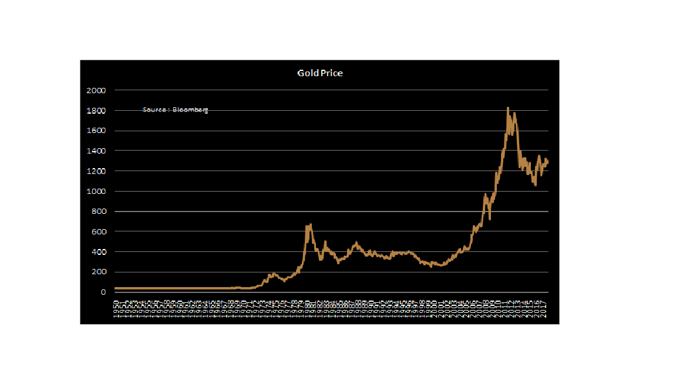

Gold sopt price는 1,377USD에 저항선이 형성되어 있으며, GLD 기준으로는 131.15USD에
저항선을 형성하고 있다.
Armstrong의 견해로는 NY Gold Nearest Futures 기준
1,393USD과 1,432USD및 1,449USD
에 각각 저항선이 형성되어 있다고 보고있음. 이 저항선이 상승 돌파될시에는 바로 매수 포인트가
된다는 의미가 됨.

우리는 앞으로 나오는 charts를 통하여 Gold price의 상승이 Dollar value와 inflation 그리고 crude oil price와 매우 상관관계가 높다는 것을 알게될 것이다. 따라서 향후 market에서의 이들 데이타의 변화를 관찰하면서 Gold 투자에 대한 시기적 판단을 해야할 것이다.